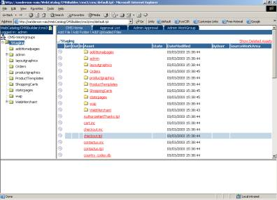

WebDNA Content Management System
WHAT IS WEBDNA CMS?
WebDNA Enterprise CMS is a client-server solution that will aggregate
three well-known patterns: CMS (Content Management System), RCS (Revision
Control System), and CVS (Concurrent Versions System). For the WebDNA
Enterprise CMS system, the functionality involved with these three different
aspects will be inseparable.
Development teams (“workgroups”) are created and individual
users gain membership to one or more of these teams. The concept of privilege-based
roles applies to team membership, meaning that given a context workgroup,
an individual user is assigned one or more roles. Privileges are assigned
statically to an individual role.

First, the authentication/privileges mechanism is the functions as the
entry point to consuming system functionality. A given user must first
authenticate prior to using the system. All content-manipulation/functionality
will be initiated and invoked via an intuitive GUI-based client, based
on the familiar file-browser “explorer” pattern.
Content Management System Component
The CMS aspect will allow users within a given development workgroup to
manage and organize their individual document/project development efforts
based on the familiar file/directory-structure paradigm. Depending on
the privileges assigned to the user, the user may, for example, create
new, move, and delete files and directories (content).
Revision Control System Component
The RCS aspect will track modifications made to content based on the familiar
check-out/modify/check-in paradigm. Given that modification history will
be persisted, the system will also allow rolling back to previous versions
should the need arise.
Concurrent Versions System Component
The CVS aspect is based on exclusive-locks. As such, it will track file-locks
and modifications in other workgroup’s work areas so that two users
will not be allowed to have the same content (but in a different work
area) locked concurrently. All modifications are submitted from a given
workgroup’s work area to a staging area, simply referred to as “Staging”.
The revision/version in Staging then becomes the master against which
potentially disparate versions in other workgroup’s work areas are
compared.
Optionally, an admin (workgroup or sysadmin) can specify a structured
approval workflow/chain, indicating that various users must flag the request
as either approved or denied. In general, a workflow is a map of a set
of approval checkpoints. An approval “checkpoint” is simply
a combination of a workgroup user and his approval/denial. The actual
approval checkpoint map can vary but overall it is a collective indication
of whether or not a given submission request gets processed.
USING WEBDNA CMS
Note: There is a right-button context menu that works in both the
tree view and list view. For MAC users with only one button, there is
a 'menu' icon in the list view that pops up the same thing.
User Types
There are five 'roles' users can assume:
· WGadmin – This privilege provides administrative
privileges for a given workgroup.
· Editor – This privilege can edit content
of a given workgroup, but you cannot create new content or delete content.
· Author – This privilege can edit, create,
or delete content in a given workgroup.
· Viewer – This privilege has read only
access.
· Unauthorized – This privilege provides
no access. It is useful for disabling access for a user who should not
be fully deleted from the system.
Every user can see the WorkGroup Admin tab. This is done to allow users
to see who belongs to a given workgroup. However, only a WGAdmin for that
particular workgroup can change the settings for users.
Approval Groups
The WGAdmin for a particular workgroup can establish the approval groups.
Once a approval group is created, the staging admin can then 'attach'
an approval group to any particular asset within staging’s files
or folders. Any time an asset is checked in, the check in process searches
recursively from that 'leaf' asset up the hierarchy until it finds an
approval group.
For example: If you want one approval group for all of staging, you attach
it to the root staging folder. If you want a particular subfolder to have
a different approval group, you attach it to that subfolder. Setting a
different approval group for a subfolder will allow the recursive search
to be encountered first before any approval group 'above' it.
If you have an approval group assigned to a folder, and you have one
file that you DO NOT want any approval required ... create an 'empty'
approval group and attach it to that one file. It will be encountered
first before the approval group attached to the folder containing the
file.
Staging Content
The 'staging' workgroup is the repository for all file change history.
If you add new files or folders in your respective workgroups, they have
to be 'checked-in' to become part of the staging repository. Likewise,
if you delete a file or folder, it needs to be checked-in for that change
to affect staging. If there is an approval workflow defined, the deletion
has to be approved before it is applied.
Deploying Content
There is a 'deploy' action under the Workgroup Admin tab, which launches
a separate (empty) template in its own window. This template does not
perform any operations.
Since deploying folder and files to production could be local or remote
operations, or involve any number of 'custom' issues for a given customer,
this one template will be unencrypted so you can create your own custom
WebDNA to automate the deployment from the staging area into production.
Uploading Multiple Files
There is a mechanism to "add a file" and to "upload"
a file over an existing file (if it is already checked out). For 'bulk'
uploads of numerous files, there is an 'upload' folder under the CMS instance
directory where a user can perform bulk FTPs of files. After the bulk
upload, the user can use the "upload files" action, which will
then import all of the files from that folder into the CMS system.
|